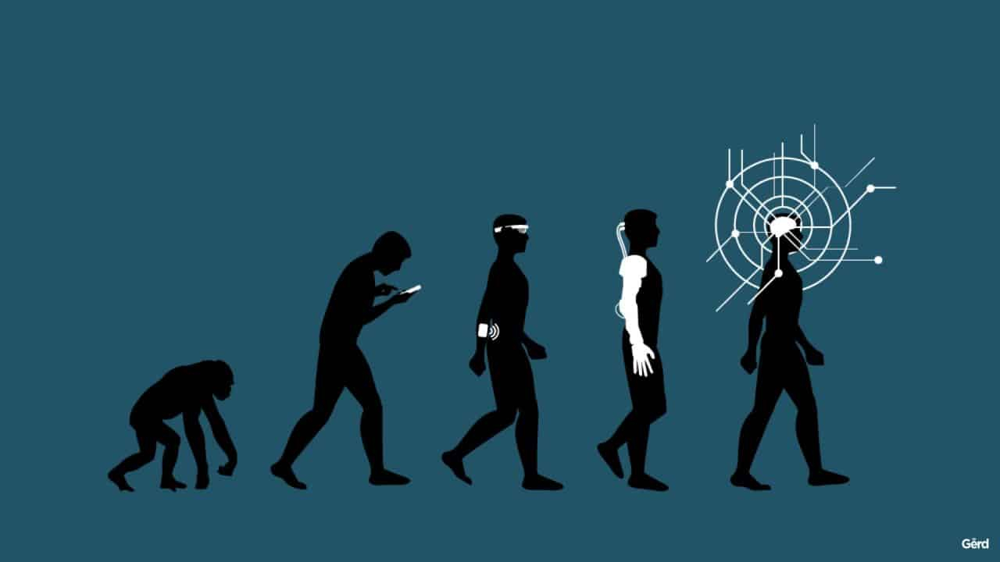
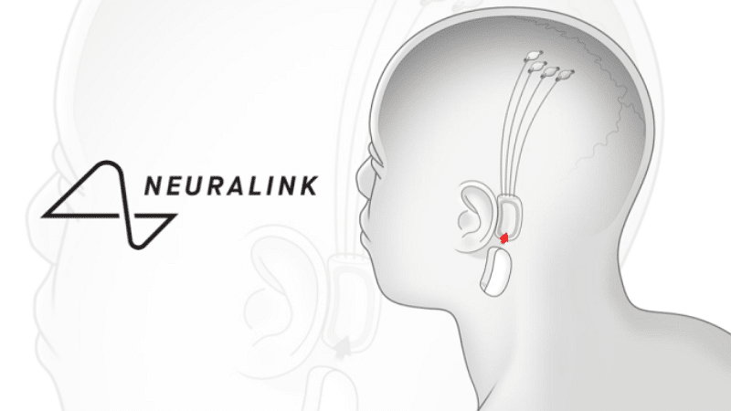

Les premières ICM viennent du mouvement transhumanisme. Ce mouvement pense que les capacités physiques et intellectuelles de l'être humains pourraient être amélioré grâce au progrès scientifique et technique.
Dans les années 1980 les scientifiques ont pour ambition l'immortalité.

Du mouvement transhumanisme ont été créé les neurotechnologies. Ce sont les technologies capable d'analyser les signaux émis par les nerfs de notre cerveau.
A) Dates
1924 : Découverte de l'activité électrique du cerveau par Hans Berger.
Hans Berger
1980 : Utilisation de l'activité électrique du cerveau afin de contrôler une prothèse par Edward Schmidt .
1999 : Une équipe de chercheurs parvient à décoder l'activité neuronale afin de reproduire les images vues par des chats.
2016: ElonMusk crée Neuralink.

Schéma des capteurs de neuralink.
2019 : Neuralink fait contrôler un ordinateur par un signe grâce à sa pensée.
2020 : Neuralink annonce qu'elle travaille sur un système capable de soigner l'autisme et la schizophrénie.
2017 : Le laboratoire Français Clinatec parvient à créer un exosquelette controlable par la pensée.